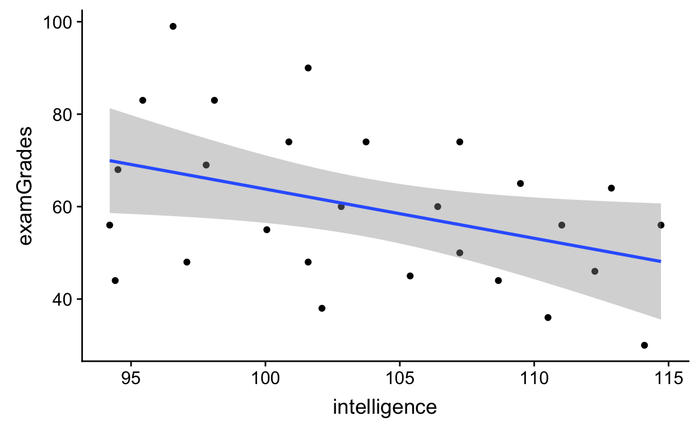

Table of Contents
Loading frequently-used packages with library()
I always load my frequently-used packages at the top of each script.
library(tidyverse); library(data.table); library(broom); library(dtplyr);
library(lme4); library(lmerTest); library(ggbeeswarm); library(cowplot)
library(hausekeep)Reading data into R
Read file in a directory and save the data as an object in the environment by using the assignment <- operator.
df1 <- read.csv("./data/sleep.csv") # base R read.csv() function
# same as df1 <- read.csv("data/sleep.csv")
# READ: assign the output read.csv("data/sleep.csv") into df1
df2 <- fread("./data/sleep.csv") # fread() from library(data.table)
# same as df2 <- fread("data/sleep.csv")
# my favorite way of reading data: combining tbl_dt() and fread()
df3 <- tbl_dt(fread("./data/sleep.csv")) # tbl_dt() from library(dtplyr)
# same as df3 <- tbl_dt(fread("data/sleep.csv"))The . in the file path simply refers to the current working directory, so it can be dropped. And .. can be used to refer to the parent directory.
Comparing the outputs of read.csv(x), fread(x), and tbl_dt(fread(x))
df1 # read.csv("./data/sleep.csv")
extra group ID
1 0.7 1 1
2 -1.6 1 2
3 -0.2 1 3
4 -1.2 1 4
5 -0.1 1 5
6 3.4 1 6
7 3.7 1 7
8 0.8 1 8
9 0.0 1 9
10 2.0 1 10
11 1.9 2 1
12 0.8 2 2
13 1.1 2 3
14 0.1 2 4
15 -0.1 2 5
16 4.4 2 6
17 5.5 2 7
18 1.6 2 8
19 4.6 2 9
20 3.4 2 10
class(df1) # read.csv("./data/sleep.csv")
[1] "data.frame"
df2 # fread("./data/sleep.csv") # fread() from library(data.table)
extra group ID
1: 0.7 1 1
2: -1.6 1 2
3: -0.2 1 3
4: -1.2 1 4
5: -0.1 1 5
6: 3.4 1 6
7: 3.7 1 7
8: 0.8 1 8
9: 0.0 1 9
10: 2.0 1 10
11: 1.9 2 1
12: 0.8 2 2
13: 1.1 2 3
14: 0.1 2 4
15: -0.1 2 5
16: 4.4 2 6
17: 5.5 2 7
18: 1.6 2 8
19: 4.6 2 9
20: 3.4 2 10
class(df2) # fread("./data/sleep.csv") # fread() from library(data.table)
[1] "data.table" "data.frame"How’s the output different from the one above?
df3 # tbl_dt(fread("./data/sleep.csv")) # tbl_dt() from library(dtplyr)
Source: local data table [20 x 3]
# A tibble: 20 x 3
extra group ID
<dbl> <int> <int>
1 0.7 1 1
2 -1.6 1 2
3 -0.2 1 3
4 -1.2 1 4
5 -0.1 1 5
6 3.4 1 6
7 3.7 1 7
8 0.8 1 8
9 0 1 9
10 2 1 10
11 1.9 2 1
12 0.8 2 2
13 1.1 2 3
14 0.1 2 4
15 -0.1 2 5
16 4.4 2 6
17 5.5 2 7
18 1.6 2 8
19 4.6 2 9
20 3.4 2 10
class(df3) # tbl_dt(fread("./data/sleep.csv")) # tbl_dt() from library(dtplyr)
[1] "tbl_dt" "tbl" "data.table" "data.frame"How’s the output different from the two outputs above?
Reading URLs and other formats
Check out the csv (comma separated values) data here. You can read data directly off a website.
Most of these read functions can import/read different types of files (e.g., csv, txt, URLs) as long as the raw data are formatted properly (e.g., separated by commas, tabs). But if you’re trying to read proprietary data formats (e.g., SPSS datasets, Excel sheets), you’ll need to use other libraries (e.g., readxl, foreign) to read those data into R.
df_url <- tbl_dt(fread("https://raw.githubusercontent.com/hauselin/rtutorialsite/master/data/sleep.csv"))
df_url # print data to console; same dataset as tbl_dt(fread("./data/sleep.csv"))
Source: local data table [20 x 3]
# A tibble: 20 x 3
extra group ID
<dbl> <int> <int>
1 0.7 1 1
2 -1.6 1 2
3 -0.2 1 3
4 -1.2 1 4
5 -0.1 1 5
6 3.4 1 6
7 3.7 1 7
8 0.8 1 8
9 0 1 9
10 2 1 10
11 1.9 2 1
12 0.8 2 2
13 1.1 2 3
14 0.1 2 4
15 -0.1 2 5
16 4.4 2 6
17 5.5 2 7
18 1.6 2 8
19 4.6 2 9
20 3.4 2 10Summarizing objects
You can summarize objects quickly by using summary(), str(), glimpse(), or print(x, n).
To view the first/last few items of an object, use head() or tail().
summary(df1) # we use summary() for many many other purposes
extra group ID
Min. :-1.600 Min. :1.0 Min. : 1.0
1st Qu.:-0.025 1st Qu.:1.0 1st Qu.: 3.0
Median : 0.950 Median :1.5 Median : 5.5
Mean : 1.540 Mean :1.5 Mean : 5.5
3rd Qu.: 3.400 3rd Qu.:2.0 3rd Qu.: 8.0
Max. : 5.500 Max. :2.0 Max. :10.0
str(df1)
'data.frame': 20 obs. of 3 variables:
$ extra: num 0.7 -1.6 -0.2 -1.2 -0.1 3.4 3.7 0.8 0 2 ...
$ group: int 1 1 1 1 1 1 1 1 1 1 ...
$ ID : int 1 2 3 4 5 6 7 8 9 10 ...
glimpse(df1)
Observations: 20
Variables: 3
$ extra <dbl> 0.7, -1.6, -0.2, -1.2, -0.1, 3.4, 3.7, 0.8, 0.0, 2.0, 1.9, 0....
$ group <int> 1, 1, 1, 1, 1, 1, 1, 1, 1, 1, 2, 2, 2, 2, 2, 2, 2, 2, 2, 2
$ ID <int> 1, 2, 3, 4, 5, 6, 7, 8, 9, 10, 1, 2, 3, 4, 5, 6, 7, 8, 9, 10
head(df1)
extra group ID
1 0.7 1 1
2 -1.6 1 2
3 -0.2 1 3
4 -1.2 1 4
5 -0.1 1 5
6 3.4 1 6
head(df3, n = 3) # what does this do?
Source: local data table [3 x 3]
# A tibble: 3 x 3
extra group ID
<dbl> <int> <int>
1 0.7 1 1
2 -1.6 1 2
3 -0.2 1 3
tail(df3, n = 2)
Source: local data table [2 x 3]
# A tibble: 2 x 3
extra group ID
<dbl> <int> <int>
1 4.6 2 9
2 3.4 2 10
print(df3, n = Inf) # Inf is infinte (so print all rows)
Source: local data table [20 x 3]
# A tibble: 20 x 3
extra group ID
<dbl> <int> <int>
1 0.7 1 1
2 -1.6 1 2
3 -0.2 1 3
4 -1.2 1 4
5 -0.1 1 5
6 3.4 1 6
7 3.7 1 7
8 0.8 1 8
9 0 1 9
10 2 1 10
11 1.9 2 1
12 0.8 2 2
13 1.1 2 3
14 0.1 2 4
15 -0.1 2 5
16 4.4 2 6
17 5.5 2 7
18 1.6 2 8
19 4.6 2 9
20 3.4 2 10Use pipes %>% to summarize objects
df3 %>% head(n = 2)
Source: local data table [2 x 3]
# A tibble: 2 x 3
extra group ID
<dbl> <int> <int>
1 0.7 1 1
2 -1.6 1 2
df3 %>% head(2) # why does this work?
Source: local data table [2 x 3]
# A tibble: 2 x 3
extra group ID
<dbl> <int> <int>
1 0.7 1 1
2 -1.6 1 2
df3 %>% print(Inf)
Source: local data table [20 x 3]
# A tibble: 20 x 3
extra group ID
<dbl> <int> <int>
1 0.7 1 1
2 -1.6 1 2
3 -0.2 1 3
4 -1.2 1 4
5 -0.1 1 5
6 3.4 1 6
7 3.7 1 7
8 0.8 1 8
9 0 1 9
10 2 1 10
11 1.9 2 1
12 0.8 2 2
13 1.1 2 3
14 0.1 2 4
15 -0.1 2 5
16 4.4 2 6
17 5.5 2 7
18 1.6 2 8
19 4.6 2 9
20 3.4 2 10
df3 %>% summary() # does this work? why?
extra group ID
Min. :-1.600 Min. :1.0 Min. : 1.0
1st Qu.:-0.025 1st Qu.:1.0 1st Qu.: 3.0
Median : 0.950 Median :1.5 Median : 5.5
Mean : 1.540 Mean :1.5 Mean : 5.5
3rd Qu.: 3.400 3rd Qu.:2.0 3rd Qu.: 8.0
Max. : 5.500 Max. :2.0 Max. :10.0 datatables and dplyr’s data_frame are much better because they tell us the class of each variable at the top when you print the object in the console. They also tell you the dimensions of your data.
df3 # data_frame (dplyr) + data.table + tibble
Source: local data table [20 x 3]
# A tibble: 20 x 3
extra group ID
<dbl> <int> <int>
1 0.7 1 1
2 -1.6 1 2
3 -0.2 1 3
4 -1.2 1 4
5 -0.1 1 5
6 3.4 1 6
7 3.7 1 7
8 0.8 1 8
9 0 1 9
10 2 1 10
11 1.9 2 1
12 0.8 2 2
13 1.1 2 3
14 0.1 2 4
15 -0.1 2 5
16 4.4 2 6
17 5.5 2 7
18 1.6 2 8
19 4.6 2 9
20 3.4 2 10Using $ and [] to extract elements using their names
names(df3)
[1] "extra" "group" "ID"
df3$extra # extracts column/variable as a vector
[1] 0.7 -1.6 -0.2 -1.2 -0.1 3.4 3.7 0.8 0.0 2.0 1.9 0.8 1.1 0.1 -0.1
[16] 4.4 5.5 1.6 4.6 3.4
df3$group
[1] 1 1 1 1 1 1 1 1 1 1 2 2 2 2 2 2 2 2 2 2
df3$ID
[1] 1 2 3 4 5 6 7 8 9 10 1 2 3 4 5 6 7 8 9 10
# create a list with named items a, b, c
myList <- list(a = -999, b = c(TRUE, FALSE, T, T), c = c('myAmazingList'))
class(myList)
[1] "list"
names(myList)
[1] "a" "b" "c"
myList # note the structure of a list ($ signs tell you how to get items)
$a
[1] -999
$b
[1] TRUE FALSE TRUE TRUE
$c
[1] "myAmazingList"
myList$a
[1] -999
myList$b
[1] TRUE FALSE TRUE TRUE
myList$c
[1] "myAmazingList"
# same as df1$extra, but use characters (in '') to extract elements
df1['extra']
extra
1 0.7
2 -1.6
3 -0.2
4 -1.2
5 -0.1
6 3.4
7 3.7
8 0.8
9 0.0
10 2.0
11 1.9
12 0.8
13 1.1
14 0.1
15 -0.1
16 4.4
17 5.5
18 1.6
19 4.6
20 3.4** BUT the syntax above only works for the data.frame class!**
df3['extra'] # fails!!!
Error in `[.data.table`(df3, "extra"): When i is a data.table (or character vector), the columns to join by must be specified either using 'on=' argument (see ?data.table) or by keying x (i.e. sorted, and, marked as sorted, see ?setkey). Keyed joins might have further speed benefits on very large data due to x being sorted in RAM.If it’s a data.table class, you do it differently (so know the classes of your objects)! More on data.table later on.
df3[, extra] # df3[i, j] (i is row, and j is column)
[1] 0.7 -1.6 -0.2 -1.2 -0.1 3.4 3.7 0.8 0.0 2.0 1.9 0.8 1.1 0.1 -0.1
[16] 4.4 5.5 1.6 4.6 3.4Writing/saving dataframes or datatables as csv files
# saves in your working directory
write.csv(df3, 'example1_df3.csv', row.names = F)
# saves in your data directory (assumes data directory exists!)
write.csv(df3, './data/example2_df3.csv', row.names = F) write.csv() overwrites any existing files that have the same name and you can’t recover the original file if you’ve overwritten it!
tidyverse: a collection of R packages
The tidyverse is an opinionated collection of R packages designed for data science. All packages share an underlying design philosophy, grammar, and data structures.
Included packages: ggplot2, dplyr, tidyr, stringr etc. see official website for documentation
library(tidyverse)Manipulating datasets with dplyr (a package in tidyverse)
Read in data from a csv file (stored in “./data/simpsonsParadox.csv”).
fread(): a function fromdata.table(fast-read, hence fread) that is EXTREMELY fast and powerful, and much better thanread.csv()orread.table()from base Rtbl_dt(): converts data to atibbleclass anddata.tableclass
df4 <- tbl_dt(fread("./data/simpsonsParadox.csv"))
df4 # print table in console
Source: local data table [40 x 3]
# A tibble: 40 x 3
iq grades class
<dbl> <dbl> <chr>
1 94.5 67.9 a
2 95.4 82.5 a
3 97.8 69.1 a
4 98.1 83.3 a
5 96.6 99.1 a
6 102. 89.9 a
7 101. 73.7 a
8 97.1 47.9 a
9 94.2 55.6 a
10 94.4 44.5 a
# ... with 30 more rows
class(df4) # note the different classes
[1] "tbl_dt" "tbl" "data.table" "data.frame"Note the information at the top.
- Source: local data table [40 x 3]: data.table and dimensions (40 rows, 3 columns)
- A tibble: 40 x 3: tibble and dimensions
- Below each variable/column name you see the class of each column (dbl is double/a number/numeric, chr is character)
class(df4$iq)
[1] "numeric"
class(df4$grades)
[1] "numeric"
class(df4$class)
[1] "character"
glimpse(df4) # have a glimpse of the data (quick summary of data)
Observations: 40
Variables: 3
$ iq <dbl> 94.5128, 95.4359, 97.7949, 98.1026, 96.5641, 101.5897, 100.8...
$ grades <dbl> 67.9295, 82.5449, 69.0833, 83.3141, 99.0833, 89.8526, 73.698...
$ class <chr> "a", "a", "a", "a", "a", "a", "a", "a", "a", "a", "b", "b", ...
print(df4, n = Inf) # print all or Inf (infinite) rows
Source: local data table [40 x 3]
# A tibble: 40 x 3
iq grades class
<dbl> <dbl> <chr>
1 94.5 67.9 a
2 95.4 82.5 a
3 97.8 69.1 a
4 98.1 83.3 a
5 96.6 99.1 a
6 102. 89.9 a
7 101. 73.7 a
8 97.1 47.9 a
9 94.2 55.6 a
10 94.4 44.5 a
11 104. 74.1 b
12 103. 59.9 b
13 102. 47.9 b
14 105. 44.9 b
15 106. 60.2 b
16 109. 64.9 b
17 107. 74.5 b
18 107. 49.9 b
19 102. 37.9 b
20 100. 54.9 b
21 111. 56.0 c
22 115. 56.0 c
23 112. 46.4 c
24 109. 43.7 c
25 111. 36.4 c
26 114. 30.2 c
27 115. 39.5 c
28 119. 51.0 c
29 113. 64.1 c
30 118 55.3 c
31 117. 17.5 d
32 121. 35.2 d
33 118. 29.9 d
34 122. 18.3 d
35 124. 29.5 d
36 121. 53.7 d
37 124. 63.7 d
38 125. 48.7 d
39 125. 38.3 d
40 128. 51.8 d Select columns/variables with select()
Select with names
select(df4, iq) # just prints the output to console without saving
Source: local data table [40 x 1]
# A tibble: 40 x 1
iq
<dbl>
1 94.5
2 95.4
3 97.8
4 98.1
5 96.6
6 102.
7 101.
8 97.1
9 94.2
10 94.4
# ... with 30 more rows
df4_iq <- select(df4, iq) # if you want to save as a new object
df4_iq # print df4_iq
Source: local data table [40 x 1]
# A tibble: 40 x 1
iq
<dbl>
1 94.5
2 95.4
3 97.8
4 98.1
5 96.6
6 102.
7 101.
8 97.1
9 94.2
10 94.4
# ... with 30 more rows
select(df4, class, grades)
Source: local data table [40 x 2]
# A tibble: 40 x 2
class grades
<chr> <dbl>
1 a 67.9
2 a 82.5
3 a 69.1
4 a 83.3
5 a 99.1
6 a 89.9
7 a 73.7
8 a 47.9
9 a 55.6
10 a 44.5
# ... with 30 more rows
select(df4, iq, grades)
Source: local data table [40 x 2]
# A tibble: 40 x 2
iq grades
<dbl> <dbl>
1 94.5 67.9
2 95.4 82.5
3 97.8 69.1
4 98.1 83.3
5 96.6 99.1
6 102. 89.9
7 101. 73.7
8 97.1 47.9
9 94.2 55.6
10 94.4 44.5
# ... with 30 more rowsSelect multiple columns in sequence with :
select(df4, iq:class)
Source: local data table [40 x 3]
# A tibble: 40 x 3
iq grades class
<dbl> <dbl> <chr>
1 94.5 67.9 a
2 95.4 82.5 a
3 97.8 69.1 a
4 98.1 83.3 a
5 96.6 99.1 a
6 102. 89.9 a
7 101. 73.7 a
8 97.1 47.9 a
9 94.2 55.6 a
10 94.4 44.5 a
# ... with 30 more rowsSelect with numbers
select(df4, 1, 3)
Source: local data table [40 x 2]
# A tibble: 40 x 2
iq class
<dbl> <chr>
1 94.5 a
2 95.4 a
3 97.8 a
4 98.1 a
5 96.6 a
6 102. a
7 101. a
8 97.1 a
9 94.2 a
10 94.4 a
# ... with 30 more rows
select(df4, 1:3) # what does 1:3 do?
Source: local data table [40 x 3]
# A tibble: 40 x 3
iq grades class
<dbl> <dbl> <chr>
1 94.5 67.9 a
2 95.4 82.5 a
3 97.8 69.1 a
4 98.1 83.3 a
5 96.6 99.1 a
6 102. 89.9 a
7 101. 73.7 a
8 97.1 47.9 a
9 94.2 55.6 a
10 94.4 44.5 a
# ... with 30 more rowsHow can we reorder columns with select()?
select(df4, 3:1) # column 3, then 2, then 1
Source: local data table [40 x 3]
# A tibble: 40 x 3
class grades iq
<chr> <dbl> <dbl>
1 a 67.9 94.5
2 a 82.5 95.4
3 a 69.1 97.8
4 a 83.3 98.1
5 a 99.1 96.6
6 a 89.9 102.
7 a 73.7 101.
8 a 47.9 97.1
9 a 55.6 94.2
10 a 44.5 94.4
# ... with 30 more rowsSelect with starts_with() or ends_with()
select(df4, starts_with("c"))
Source: local data table [40 x 1]
# A tibble: 40 x 1
class
<chr>
1 a
2 a
3 a
4 a
5 a
6 a
7 a
8 a
9 a
10 a
# ... with 30 more rows
select(df4, starts_with("g"))
Source: local data table [40 x 1]
# A tibble: 40 x 1
grades
<dbl>
1 67.9
2 82.5
3 69.1
4 83.3
5 99.1
6 89.9
7 73.7
8 47.9
9 55.6
10 44.5
# ... with 30 more rows
select(df4, starts_with("g"), ends_with("s"))
Source: local data table [40 x 2]
# A tibble: 40 x 2
grades class
<dbl> <chr>
1 67.9 a
2 82.5 a
3 69.1 a
4 83.3 a
5 99.1 a
6 89.9 a
7 73.7 a
8 47.9 a
9 55.6 a
10 44.5 a
# ... with 30 more rowsDropping columns with -
select(df4, -grades) # what should you get?
Source: local data table [40 x 2]
# A tibble: 40 x 2
iq class
<dbl> <chr>
1 94.5 a
2 95.4 a
3 97.8 a
4 98.1 a
5 96.6 a
6 102. a
7 101. a
8 97.1 a
9 94.2 a
10 94.4 a
# ... with 30 more rows
select(df4, -ends_with("s")) # what should you get?
Source: local data table [40 x 1]
# A tibble: 40 x 1
iq
<dbl>
1 94.5
2 95.4
3 97.8
4 98.1
5 96.6
6 102.
7 101.
8 97.1
9 94.2
10 94.4
# ... with 30 more rows
select(df4, -ends_with("s"), class, -1) # what should you get?
Source: local data table [40 x 1]
# A tibble: 40 x 1
class
<chr>
1 a
2 a
3 a
4 a
5 a
6 a
7 a
8 a
9 a
10 a
# ... with 30 more rowsRenaming while selecting columns/variables
select(df4, intelligence = iq) # select iq and rename it to intelligence
Source: local data table [40 x 1]
# A tibble: 40 x 1
intelligence
<dbl>
1 94.5
2 95.4
3 97.8
4 98.1
5 96.6
6 102.
7 101.
8 97.1
9 94.2
10 94.4
# ... with 30 more rowsOther options for select() include matches(), contains(). For more information, see tutorial/vignette here. For official documentation, see here.
Select rows with slice()
slice(df4, 1:5) # rows 1 to 5
Source: local data table [5 x 3]
# A tibble: 5 x 3
iq grades class
<dbl> <dbl> <chr>
1 94.5 67.9 a
2 95.4 82.5 a
3 97.8 69.1 a
4 98.1 83.3 a
5 96.6 99.1 a
slice(df4, c(1, 3, 5, 7, 9)) # rows 1, 3, 5, 7, 9
Source: local data table [5 x 3]
# A tibble: 5 x 3
iq grades class
<dbl> <dbl> <chr>
1 94.5 67.9 a
2 97.8 69.1 a
3 96.6 99.1 a
4 101. 73.7 a
5 94.2 55.6 a
slice(df4, seq(from = 1, to = 10, by = 2)) # same as above, but using sequence function (from 1 to 10, by/in steps of 2)
Source: local data table [5 x 3]
# A tibble: 5 x 3
iq grades class
<dbl> <dbl> <chr>
1 94.5 67.9 a
2 97.8 69.1 a
3 96.6 99.1 a
4 101. 73.7 a
5 94.2 55.6 a
slice(df4, -c(1:39)) # remove rows 1 to 39
Source: local data table [1 x 3]
# A tibble: 1 x 3
iq grades class
<dbl> <dbl> <chr>
1 128. 51.8 d Filtering or subsetting data/rows with filter()
While select() acts on columns, filter() acts on rows. It chooses/subsets rows based on criteria you specify.
How many classes are there in this dataset? How many unique classes?
df4$class
[1] "a" "a" "a" "a" "a" "a" "a" "a" "a" "a" "b" "b" "b" "b" "b" "b" "b" "b" "b"
[20] "b" "c" "c" "c" "c" "c" "c" "c" "c" "c" "c" "d" "d" "d" "d" "d" "d" "d" "d"
[39] "d" "d"
unique(df4$class) # unique classes
[1] "a" "b" "c" "d"
df4$class %>% unique() # same as above but with pipes
[1] "a" "b" "c" "d"Filter rows that match one criterion
filter(df4, class == "a") # how many rows of data do we have now?
Source: local data table [10 x 3]
# A tibble: 10 x 3
iq grades class
<dbl> <dbl> <chr>
1 94.5 67.9 a
2 95.4 82.5 a
3 97.8 69.1 a
4 98.1 83.3 a
5 96.6 99.1 a
6 102. 89.9 a
7 101. 73.7 a
8 97.1 47.9 a
9 94.2 55.6 a
10 94.4 44.5 a
filter(df4, class == 'b') # R accepths single or double quotations
Source: local data table [10 x 3]
# A tibble: 10 x 3
iq grades class
<dbl> <dbl> <chr>
1 104. 74.1 b
2 103. 59.9 b
3 102. 47.9 b
4 105. 44.9 b
5 106. 60.2 b
6 109. 64.9 b
7 107. 74.5 b
8 107. 49.9 b
9 102. 37.9 b
10 100. 54.9 b
df4_classA <- filter(df4, class == 'a') # to save filtered data as an object
df4_classA
Source: local data table [10 x 3]
# A tibble: 10 x 3
iq grades class
<dbl> <dbl> <chr>
1 94.5 67.9 a
2 95.4 82.5 a
3 97.8 69.1 a
4 98.1 83.3 a
5 96.6 99.1 a
6 102. 89.9 a
7 101. 73.7 a
8 97.1 47.9 a
9 94.2 55.6 a
10 94.4 44.5 a Filter rows that match multiple criteria
filter(df4, class == c("a", "b"))
Source: local data table [10 x 3]
# A tibble: 10 x 3
iq grades class
<dbl> <dbl> <chr>
1 94.5 67.9 a
2 97.8 69.1 a
3 96.6 99.1 a
4 101. 73.7 a
5 94.2 55.6 a
6 103. 59.9 b
7 105. 44.9 b
8 109. 64.9 b
9 107. 49.9 b
10 100. 54.9 b Is anything wrong? Look at the output and compare with filter(df4, class == "a") and filter(df4, class == "b"). How many rows should you expect from filter(df4, class == c("a", "b"))? How many rows did you get?
Here’s how to do it properly. You use %in% if you want to match multiple criteria. == only works if you’re matching by just ONE criterion
filter(df4, class %in% c("a", "b")) # check number of rows of output
Source: local data table [20 x 3]
# A tibble: 20 x 3
iq grades class
<dbl> <dbl> <chr>
1 94.5 67.9 a
2 95.4 82.5 a
3 97.8 69.1 a
4 98.1 83.3 a
5 96.6 99.1 a
6 102. 89.9 a
7 101. 73.7 a
8 97.1 47.9 a
9 94.2 55.6 a
10 94.4 44.5 a
11 104. 74.1 b
12 103. 59.9 b
13 102. 47.9 b
14 105. 44.9 b
15 106. 60.2 b
16 109. 64.9 b
17 107. 74.5 b
18 107. 49.9 b
19 102. 37.9 b
20 100. 54.9 b Filter by range
filter(df4, iq > 120) # iq greater than 120
Source: local data table [8 x 3]
# A tibble: 8 x 3
iq grades class
<dbl> <dbl> <chr>
1 121. 35.2 d
2 122. 18.3 d
3 124. 29.5 d
4 121. 53.7 d
5 124. 63.7 d
6 125. 48.7 d
7 125. 38.3 d
8 128. 51.8 d
filter(df4, iq >= 115) # iq greater than or equal to 120 (> and =, without space in between)
Source: local data table [13 x 3]
# A tibble: 13 x 3
iq grades class
<dbl> <dbl> <chr>
1 115. 39.5 c
2 119. 51.0 c
3 118 55.3 c
4 117. 17.5 d
5 121. 35.2 d
6 118. 29.9 d
7 122. 18.3 d
8 124. 29.5 d
9 121. 53.7 d
10 124. 63.7 d
11 125. 48.7 d
12 125. 38.3 d
13 128. 51.8 d
filter(df4, grades < 20) # grades less than 20
Source: local data table [2 x 3]
# A tibble: 2 x 3
iq grades class
<dbl> <dbl> <chr>
1 117. 17.5 d
2 122. 18.3 d
filter(df4, grades <= 30) # grades less than 30
Source: local data table [4 x 3]
# A tibble: 4 x 3
iq grades class
<dbl> <dbl> <chr>
1 117. 17.5 d
2 118. 29.9 d
3 122. 18.3 d
4 124. 29.5 d
filter(df4, grades <= 30 & iq > 120) # the intelligent but lazy students
Source: local data table [2 x 3]
# A tibble: 2 x 3
iq grades class
<dbl> <dbl> <chr>
1 122. 18.3 d
2 124. 29.5 d Filter through negating !
filter(df4, class != "a") # class IS NOT "a" (! and =, without space in between)
Source: local data table [30 x 3]
# A tibble: 30 x 3
iq grades class
<dbl> <dbl> <chr>
1 104. 74.1 b
2 103. 59.9 b
3 102. 47.9 b
4 105. 44.9 b
5 106. 60.2 b
6 109. 64.9 b
7 107. 74.5 b
8 107. 49.9 b
9 102. 37.9 b
10 100. 54.9 b
# ... with 20 more rowsHow would you remove values that match “a” and “b”?
filter(df4, class !%in% c("a", "b")) # note RStudio underlies potential errors for you (like Microsoft Word highlighting typos and grammar errors)
Error: <text>:1:19: unexpected '!'
1: filter(df4, class !
^Oops, what’s wrong?
filter(df4, !class %in% c("a", "b")) # correct way to do it
Source: local data table [20 x 3]
# A tibble: 20 x 3
iq grades class
<dbl> <dbl> <chr>
1 111. 56.0 c
2 115. 56.0 c
3 112. 46.4 c
4 109. 43.7 c
5 111. 36.4 c
6 114. 30.2 c
7 115. 39.5 c
8 119. 51.0 c
9 113. 64.1 c
10 118 55.3 c
11 117. 17.5 d
12 121. 35.2 d
13 118. 29.9 d
14 122. 18.3 d
15 124. 29.5 d
16 121. 53.7 d
17 124. 63.7 d
18 125. 48.7 d
19 125. 38.3 d
20 128. 51.8 d Operators
==, %in%, %between%, >, >=, <, <=, != are operators. See here for more information.
Rename variables/columns with rename()
df4_renamed <- rename(df4, intelligence = iq, examGrades = grades, classroom = class) # rename(data, newname = oldname)
df4_renamed
Source: local data table [40 x 3]
# A tibble: 40 x 3
intelligence examGrades classroom
<dbl> <dbl> <chr>
1 94.5 67.9 a
2 95.4 82.5 a
3 97.8 69.1 a
4 98.1 83.3 a
5 96.6 99.1 a
6 102. 89.9 a
7 101. 73.7 a
8 97.1 47.9 a
9 94.2 55.6 a
10 94.4 44.5 a
# ... with 30 more rows
glimpse(df4_renamed)
Observations: 40
Variables: 3
$ intelligence <dbl> 94.5128, 95.4359, 97.7949, 98.1026, 96.5641, 101.5897,...
$ examGrades <dbl> 67.9295, 82.5449, 69.0833, 83.3141, 99.0833, 89.8526, ...
$ classroom <chr> "a", "a", "a", "a", "a", "a", "a", "a", "a", "a", "b",...
names(df4_renamed)
[1] "intelligence" "examGrades" "classroom" Create new columns/variables with mutate()
mutate(df4,
iqMeanCentered = iq - mean(iq, na.rm = T), # substract mean iq from each iq
gradesRound0dp = round(grades) # round grades
)
Source: local data table [40 x 5]
# A tibble: 40 x 5
iq grades class iqMeanCentered gradesRound0dp
<dbl> <dbl> <chr> <dbl> <dbl>
1 94.5 67.9 a -14.9 68
2 95.4 82.5 a -14.0 83
3 97.8 69.1 a -11.6 69
4 98.1 83.3 a -11.3 83
5 96.6 99.1 a -12.8 99
6 102. 89.9 a -7.82 90
7 101. 73.7 a -8.54 74
8 97.1 47.9 a -12.3 48
9 94.2 55.6 a -15.2 56
10 94.4 44.5 a -15.0 44
# ... with 30 more rows
mutate(df4, studentNumber = 1:nrow(df4))
Source: local data table [40 x 4]
# A tibble: 40 x 4
iq grades class studentNumber
<dbl> <dbl> <chr> <int>
1 94.5 67.9 a 1
2 95.4 82.5 a 2
3 97.8 69.1 a 3
4 98.1 83.3 a 4
5 96.6 99.1 a 5
6 102. 89.9 a 6
7 101. 73.7 a 7
8 97.1 47.9 a 8
9 94.2 55.6 a 9
10 94.4 44.5 a 10
# ... with 30 more rows
nrow(df4) # number of rows; ncol() gives you number of columns
[1] 40
1:nrow(df4) # generate sequence of numbers from 1 to number of rows of dataset
[1] 1 2 3 4 5 6 7 8 9 10 11 12 13 14 15 16 17 18 19 20 21 22 23 24 25
[26] 26 27 28 29 30 31 32 33 34 35 36 37 38 39 40
mutate(df4, studentNumber = 1:nrow(df4)) %>% print(n = Inf)
Source: local data table [40 x 4]
# A tibble: 40 x 4
iq grades class studentNumber
<dbl> <dbl> <chr> <int>
1 94.5 67.9 a 1
2 95.4 82.5 a 2
3 97.8 69.1 a 3
4 98.1 83.3 a 4
5 96.6 99.1 a 5
6 102. 89.9 a 6
7 101. 73.7 a 7
8 97.1 47.9 a 8
9 94.2 55.6 a 9
10 94.4 44.5 a 10
11 104. 74.1 b 11
12 103. 59.9 b 12
13 102. 47.9 b 13
14 105. 44.9 b 14
15 106. 60.2 b 15
16 109. 64.9 b 16
17 107. 74.5 b 17
18 107. 49.9 b 18
19 102. 37.9 b 19
20 100. 54.9 b 20
21 111. 56.0 c 21
22 115. 56.0 c 22
23 112. 46.4 c 23
24 109. 43.7 c 24
25 111. 36.4 c 25
26 114. 30.2 c 26
27 115. 39.5 c 27
28 119. 51.0 c 28
29 113. 64.1 c 29
30 118 55.3 c 30
31 117. 17.5 d 31
32 121. 35.2 d 32
33 118. 29.9 d 33
34 122. 18.3 d 34
35 124. 29.5 d 35
36 121. 53.7 d 36
37 124. 63.7 d 37
38 125. 48.7 d 38
39 125. 38.3 d 39
40 128. 51.8 d 40Sorting or arranging data rows with arrange()
arrange(df4, iq) # ascending order of iq
Source: local data table [40 x 3]
# A tibble: 40 x 3
iq grades class
<dbl> <dbl> <chr>
1 94.2 55.6 a
2 94.4 44.5 a
3 94.5 67.9 a
4 95.4 82.5 a
5 96.6 99.1 a
6 97.1 47.9 a
7 97.8 69.1 a
8 98.1 83.3 a
9 100. 54.9 b
10 101. 73.7 a
# ... with 30 more rows
arrange(df4, iq, grades) # ascending order of iq then grades
Source: local data table [40 x 3]
# A tibble: 40 x 3
iq grades class
<dbl> <dbl> <chr>
1 94.2 55.6 a
2 94.4 44.5 a
3 94.5 67.9 a
4 95.4 82.5 a
5 96.6 99.1 a
6 97.1 47.9 a
7 97.8 69.1 a
8 98.1 83.3 a
9 100. 54.9 b
10 101. 73.7 a
# ... with 30 more rows
arrange(df4, desc(iq)) # descending order of iq
Source: local data table [40 x 3]
# A tibble: 40 x 3
iq grades class
<dbl> <dbl> <chr>
1 128. 51.8 d
2 125. 38.3 d
3 125. 48.7 d
4 124. 63.7 d
5 124. 29.5 d
6 122. 18.3 d
7 121. 53.7 d
8 121. 35.2 d
9 119. 51.0 c
10 118 55.3 c
# ... with 30 more rows
arrange(df4, desc(class)) # descending order of class
Source: local data table [40 x 3]
# A tibble: 40 x 3
iq grades class
<dbl> <dbl> <chr>
1 117. 17.5 d
2 121. 35.2 d
3 118. 29.9 d
4 122. 18.3 d
5 124. 29.5 d
6 121. 53.7 d
7 124. 63.7 d
8 125. 48.7 d
9 125. 38.3 d
10 128. 51.8 d
# ... with 30 more rowsorder() is another function (base R function) people often use to arrange rows. See here for more information.
Combining functions with pipes %in%
df4 %>% print(n = Inf) # reminder what the dataset looks like
Source: local data table [40 x 3]
# A tibble: 40 x 3
iq grades class
<dbl> <dbl> <chr>
1 94.5 67.9 a
2 95.4 82.5 a
3 97.8 69.1 a
4 98.1 83.3 a
5 96.6 99.1 a
6 102. 89.9 a
7 101. 73.7 a
8 97.1 47.9 a
9 94.2 55.6 a
10 94.4 44.5 a
11 104. 74.1 b
12 103. 59.9 b
13 102. 47.9 b
14 105. 44.9 b
15 106. 60.2 b
16 109. 64.9 b
17 107. 74.5 b
18 107. 49.9 b
19 102. 37.9 b
20 100. 54.9 b
21 111. 56.0 c
22 115. 56.0 c
23 112. 46.4 c
24 109. 43.7 c
25 111. 36.4 c
26 114. 30.2 c
27 115. 39.5 c
28 119. 51.0 c
29 113. 64.1 c
30 118 55.3 c
31 117. 17.5 d
32 121. 35.2 d
33 118. 29.9 d
34 122. 18.3 d
35 124. 29.5 d
36 121. 53.7 d
37 124. 63.7 d
38 125. 48.7 d
39 125. 38.3 d
40 128. 51.8 d You can combine multiple functions with %in%. After adding each function/line, you can check your output before you add the next function/line. This way, you can build really complicated and long code/syntax without nesting functions!
NOTE that comments # are placed AFTER the pipe symbol!
df4 %>%
mutate(gradesRound = round(grades), studentNo = 1:.N) %>% # round grades, add subject number: .N is a shortcut for nrow(df4)
select(-grades) %>% # remove original grades variable
select(studentNo, class, iq, gradesRound) %>% # reorder columns
rename(intelligence = iq, examGrades = gradesRound, classroom = class) %>% # rename variables
filter(intelligence %between% c(90, 105)) # select only those with intelligence between 90 and 105
Source: local data table [15 x 4]
# A tibble: 15 x 4
studentNo classroom intelligence examGrades
<int> <chr> <dbl> <dbl>
1 1 a 94.5 68
2 2 a 95.4 83
3 3 a 97.8 69
4 4 a 98.1 83
5 5 a 96.6 99
6 6 a 102. 90
7 7 a 101. 74
8 8 a 97.1 48
9 9 a 94.2 56
10 10 a 94.4 44
11 11 b 104. 74
12 12 b 103. 60
13 13 b 102. 48
14 19 b 102. 38
15 20 b 100. 55The code above doesn’t save the output as an object. Below we save it as an object.
df5 <- df4 %>%
mutate(gradesRound = round(grades), studentNo = 1:.N) %>% # round grades, add subject number: .N is a shortcut for nrow(df4)
select(-grades) %>% # remove original grades variable
select(studentNo, class, iq, gradesRound) %>% # reorder columns
rename(intelligence = iq, examGrades = gradesRound, classroom = class) %>% # rename variables
filter(intelligence %between% c(90, 105)) # select only those with intelligence between 90 and 105
df5 # check output
Source: local data table [15 x 4]
# A tibble: 15 x 4
studentNo classroom intelligence examGrades
<int> <chr> <dbl> <dbl>
1 1 a 94.5 68
2 2 a 95.4 83
3 3 a 97.8 69
4 4 a 98.1 83
5 5 a 96.6 99
6 6 a 102. 90
7 7 a 101. 74
8 8 a 97.1 48
9 9 a 94.2 56
10 10 a 94.4 44
11 11 b 104. 74
12 12 b 103. 60
13 13 b 102. 48
14 19 b 102. 38
15 20 b 100. 55You can even pipe the output to any other functions (e.g., plotting functions)
df4 %>%
mutate(gradesRound = round(grades), studentNo = 1:.N) %>% # round grades, add subject number: .N is a shortcut for nrow(df4)
select(-grades) %>% # remove original grades variable
select(studentNo, class, iq, gradesRound) %>% # reorder columns
rename(intelligence = iq, examGrades = gradesRound, classroom = class) %>% # rename variables
filter(intelligence %between% c(80, 115)) %>% # select only those with intelligence between 80 and 115
ggplot(aes(x = intelligence, y = examGrades)) + # note the + sign! (ggplot uses + sign)
geom_point() + # add each data point
geom_smooth(method = 'lm', se = T) # fit regression line with standard error (se = TRUE)
Higher intelligence, worse grades? What’s going on? We figure out why later on. And more on ggplot2 package in future tutorials.
Compute summary statistics with summarize() or summarise()
df5 %>%
group_by(classroom) %>% # grouping by classroom
summarise(iqMean = mean(intelligence, na.rm = T))
Source: local data table [2 x 2]
# A tibble: 2 x 2
classroom iqMean
<chr> <dbl>
1 a 97.1
2 b 102.
df5 %>%
group_by(classroom) %>% # grouping by classroom
summarize(iqClassMean = mean(intelligence, na.rm = T),
examGradesClassMean = mean(examGrades, na.rm = T))
Source: local data table [2 x 3]
# A tibble: 2 x 3
classroom iqClassMean examGradesClassMean
<chr> <dbl> <dbl>
1 a 97.1 71.4
2 b 102. 55 Same code but with original dataset (dimensions: 40 x 3)
df4 %>%
group_by(class) %>% # grouping by class
summarise(iqClassMean = mean(iq, na.rm = T),
examGradesClassMean = mean(grades, na.rm = T))
Source: local data table [4 x 3]
# A tibble: 4 x 3
class iqClassMean examGradesClassMean
<chr> <dbl> <dbl>
1 a 97.1 71.4
2 b 105. 56.9
3 c 114. 47.9
4 d 122. 38.7Group by multiple variables/conditions
Randomly generate gender of student for each row of data with sample()
sample(x = c("female", "male"), size = 40, replace = T) # what is this doing
[1] "male" "male" "male" "female" "male" "female" "male" "male"
[9] "female" "female" "male" "male" "female" "female" "male" "male"
[17] "female" "female" "male" "male" "female" "male" "female" "female"
[25] "female" "male" "female" "male" "female" "male" "female" "female"
[33] "male" "male" "female" "male" "male" "female" "male" "female"
df4$gender <- sample(x = c("female", "male"), size = 40, replace = T)
# same as df4 <- mutate(df4, gender = sample(x = c("female", "male"), size = .N, replace = T))Because the gender labels are generated randomly, you’ll get different values each time you re-run the code.
print(df4, n = Inf)
Source: local data table [40 x 4]
# A tibble: 40 x 4
iq grades class gender
<dbl> <dbl> <chr> <chr>
1 94.5 67.9 a male
2 95.4 82.5 a male
3 97.8 69.1 a male
4 98.1 83.3 a male
5 96.6 99.1 a female
6 102. 89.9 a male
7 101. 73.7 a female
8 97.1 47.9 a female
9 94.2 55.6 a male
10 94.4 44.5 a male
11 104. 74.1 b female
12 103. 59.9 b female
13 102. 47.9 b female
14 105. 44.9 b female
15 106. 60.2 b female
16 109. 64.9 b male
17 107. 74.5 b male
18 107. 49.9 b female
19 102. 37.9 b female
20 100. 54.9 b male
21 111. 56.0 c male
22 115. 56.0 c female
23 112. 46.4 c male
24 109. 43.7 c male
25 111. 36.4 c female
26 114. 30.2 c female
27 115. 39.5 c female
28 119. 51.0 c male
29 113. 64.1 c female
30 118 55.3 c female
31 117. 17.5 d male
32 121. 35.2 d female
33 118. 29.9 d female
34 122. 18.3 d male
35 124. 29.5 d male
36 121. 53.7 d male
37 124. 63.7 d female
38 125. 48.7 d female
39 125. 38.3 d female
40 128. 51.8 d femaleCompute mean for each class by gender
df4 %>%
group_by(class, gender) %>% # group by class then gender
summarise(iqClassMean = mean(iq, na.rm = T),
examGradesClassMean = mean(grades, na.rm = T))
Source: local data table [8 x 4]
Groups: class
# A tibble: 8 x 4
class gender iqClassMean examGradesClassMean
<chr> <chr> <dbl> <dbl>
1 a male 96.6 70.4
2 a female 98.2 73.6
3 b female 104. 53.5
4 b male 106. 64.7
5 c male 113. 49.3
6 c female 114. 46.9
7 d male 121. 29.8
8 d female 123. 44.6More dplyr and tidyverse information
For much more information, see the following sites
Supercharging your workflow with data.table()
While the syntax of tidyverse and dplyr functions are really easy to understand, they sometimes can be quite long-winded. Using pipes %>% makes your code readable, but is a bit long to read sometimes. Now we’ll see how data.table() can shorten all that code while maintaining readability. Also, data.table() is MUCH faster, which is especially useful when dealing with bigger datasets (hundreds of MBs and GBs and even TBs).
If you use tbl_dt(fread('filename')) to read your dataset into R, then your object is already a data.table. Check it with class(objectName).
df4
Source: local data table [40 x 4]
# A tibble: 40 x 4
iq grades class gender
<dbl> <dbl> <chr> <chr>
1 94.5 67.9 a male
2 95.4 82.5 a male
3 97.8 69.1 a male
4 98.1 83.3 a male
5 96.6 99.1 a female
6 102. 89.9 a male
7 101. 73.7 a female
8 97.1 47.9 a female
9 94.2 55.6 a male
10 94.4 44.5 a male
# ... with 30 more rows
class(df4)
[1] "tbl_dt" "tbl" "data.table" "data.frame"
df1
extra group ID
1 0.7 1 1
2 -1.6 1 2
3 -0.2 1 3
4 -1.2 1 4
5 -0.1 1 5
6 3.4 1 6
7 3.7 1 7
8 0.8 1 8
9 0.0 1 9
10 2.0 1 10
11 1.9 2 1
12 0.8 2 2
13 1.1 2 3
14 0.1 2 4
15 -0.1 2 5
16 4.4 2 6
17 5.5 2 7
18 1.6 2 8
19 4.6 2 9
20 3.4 2 10
class(df1)
[1] "data.frame"If your object isn’t a data.table, you can convert it to one using tbl_dt() from the dtplyr package. tbl_dt() turns your dataset into tibble (tbl) and data.table.
df1_dt <- tbl_dt(df1) # preferred approach, especially for datasets with many columns and rows
class(df1_dt)
[1] "tbl_dt" "tbl" "data.table" "data.frame"
setDT(df1) # setDT() also works (and works without reassignment: no need to use <-)
class(df1) # but setDT() doesn't convert your dataset to a tibble class at the same time
[1] "data.table" "data.frame"data.table() basics: [i, j, by]
data.table use a special but extremely concise syntax that only works with objects that have the data.table class associated with them. If you try to use this special syntax on other classes, you’ll screw up big time. So check your class or try to convert to or use data.table() whenever possible!
data.table[i, j, by]
- i: row (equivalent to
filter()andslice()) - j: column (equivelent to
select()andsummarize()andmutate()) - by: group by (equivalent to
group_by())
Filter data.table via i
print(df4, n = Inf) # remind yourself what your data look like
Source: local data table [40 x 4]
# A tibble: 40 x 4
iq grades class gender
<dbl> <dbl> <chr> <chr>
1 94.5 67.9 a male
2 95.4 82.5 a male
3 97.8 69.1 a male
4 98.1 83.3 a male
5 96.6 99.1 a female
6 102. 89.9 a male
7 101. 73.7 a female
8 97.1 47.9 a female
9 94.2 55.6 a male
10 94.4 44.5 a male
11 104. 74.1 b female
12 103. 59.9 b female
13 102. 47.9 b female
14 105. 44.9 b female
15 106. 60.2 b female
16 109. 64.9 b male
17 107. 74.5 b male
18 107. 49.9 b female
19 102. 37.9 b female
20 100. 54.9 b male
21 111. 56.0 c male
22 115. 56.0 c female
23 112. 46.4 c male
24 109. 43.7 c male
25 111. 36.4 c female
26 114. 30.2 c female
27 115. 39.5 c female
28 119. 51.0 c male
29 113. 64.1 c female
30 118 55.3 c female
31 117. 17.5 d male
32 121. 35.2 d female
33 118. 29.9 d female
34 122. 18.3 d male
35 124. 29.5 d male
36 121. 53.7 d male
37 124. 63.7 d female
38 125. 48.7 d female
39 125. 38.3 d female
40 128. 51.8 d female
class(df4) # is it a data.table?
[1] "tbl_dt" "tbl" "data.table" "data.frame"Different ways to filter via i
df4[i = gender == 'female',] # just female (j, by are NULL)
Source: local data table [22 x 4]
# A tibble: 22 x 4
iq grades class gender
<dbl> <dbl> <chr> <chr>
1 96.6 99.1 a female
2 101. 73.7 a female
3 97.1 47.9 a female
4 104. 74.1 b female
5 103. 59.9 b female
6 102. 47.9 b female
7 105. 44.9 b female
8 106. 60.2 b female
9 107. 49.9 b female
10 102. 37.9 b female
# ... with 12 more rows
df4[i = gender != 'female',] # not female
Source: local data table [18 x 4]
# A tibble: 18 x 4
iq grades class gender
<dbl> <dbl> <chr> <chr>
1 94.5 67.9 a male
2 95.4 82.5 a male
3 97.8 69.1 a male
4 98.1 83.3 a male
5 102. 89.9 a male
6 94.2 55.6 a male
7 94.4 44.5 a male
8 109. 64.9 b male
9 107. 74.5 b male
10 100. 54.9 b male
11 111. 56.0 c male
12 112. 46.4 c male
13 109. 43.7 c male
14 119. 51.0 c male
15 117. 17.5 d male
16 122. 18.3 d male
17 124. 29.5 d male
18 121. 53.7 d male
df4[gender != 'female',] # also works
Source: local data table [18 x 4]
# A tibble: 18 x 4
iq grades class gender
<dbl> <dbl> <chr> <chr>
1 94.5 67.9 a male
2 95.4 82.5 a male
3 97.8 69.1 a male
4 98.1 83.3 a male
5 102. 89.9 a male
6 94.2 55.6 a male
7 94.4 44.5 a male
8 109. 64.9 b male
9 107. 74.5 b male
10 100. 54.9 b male
11 111. 56.0 c male
12 112. 46.4 c male
13 109. 43.7 c male
14 119. 51.0 c male
15 117. 17.5 d male
16 122. 18.3 d male
17 124. 29.5 d male
18 121. 53.7 d male
df4[grades > 85,] # also works
Source: local data table [2 x 4]
# A tibble: 2 x 4
iq grades class gender
<dbl> <dbl> <chr> <chr>
1 96.6 99.1 a female
2 102. 89.9 a male
# same as filter(df4, grades > 85), but much more concise
df4[grades > 85] # also works
Source: local data table [2 x 4]
# A tibble: 2 x 4
iq grades class gender
<dbl> <dbl> <chr> <chr>
1 96.6 99.1 a female
2 102. 89.9 a male
df4[i = grades > 85] # also works
Source: local data table [2 x 4]
# A tibble: 2 x 4
iq grades class gender
<dbl> <dbl> <chr> <chr>
1 96.6 99.1 a female
2 102. 89.9 a male
df4[grades < 50 & iq > 120] # smart but (AND &) lazy people (grades < 50 AND iq > 120)
Source: local data table [5 x 4]
# A tibble: 5 x 4
iq grades class gender
<dbl> <dbl> <chr> <chr>
1 121. 35.2 d female
2 122. 18.3 d male
3 124. 29.5 d male
4 125. 48.7 d female
5 125. 38.3 d female
df4[grades < 50 | iq > 120] # smart but OR lazy people (grades < 50 OR iq > 120)
Source: local data table [21 x 4]
# A tibble: 21 x 4
iq grades class gender
<dbl> <dbl> <chr> <chr>
1 97.1 47.9 a female
2 94.4 44.5 a male
3 102. 47.9 b female
4 105. 44.9 b female
5 107. 49.9 b female
6 102. 37.9 b female
7 112. 46.4 c male
8 109. 43.7 c male
9 111. 36.4 c female
10 114. 30.2 c female
# ... with 11 more rowsSlice (select rows) with indices via i
df4[1:3] # rows 1 to 3
Source: local data table [3 x 4]
# A tibble: 3 x 4
iq grades class gender
<dbl> <dbl> <chr> <chr>
1 94.5 67.9 a male
2 95.4 82.5 a male
3 97.8 69.1 a male
df4[35:.N] # rows 35 to last row
Source: local data table [6 x 4]
# A tibble: 6 x 4
iq grades class gender
<dbl> <dbl> <chr> <chr>
1 124. 29.5 d male
2 121. 53.7 d male
3 124. 63.7 d female
4 125. 48.7 d female
5 125. 38.3 d female
6 128. 51.8 d femaleSelecting columns via j
df4[, j = grades] # vector
[1] 67.9295 82.5449 69.0833 83.3141 99.0833 89.8526 73.6987 47.9295 55.6218
[10] 44.4679 74.0833 59.8526 47.9295 44.8526 60.2372 64.8526 74.4679 49.8526
[19] 37.9295 54.8526 56.0064 56.0064 46.3910 43.6987 36.3910 30.2372 39.4679
[28] 51.0064 64.0833 55.3000 17.5449 35.2372 29.8526 18.3141 29.4679 53.6987
[37] 63.6987 48.6987 38.3141 51.7756
df4[, grades] # same as above, but note the comma, which indicates j via position (i is before the first comma)
[1] 67.9295 82.5449 69.0833 83.3141 99.0833 89.8526 73.6987 47.9295 55.6218
[10] 44.4679 74.0833 59.8526 47.9295 44.8526 60.2372 64.8526 74.4679 49.8526
[19] 37.9295 54.8526 56.0064 56.0064 46.3910 43.6987 36.3910 30.2372 39.4679
[28] 51.0064 64.0833 55.3000 17.5449 35.2372 29.8526 18.3141 29.4679 53.6987
[37] 63.6987 48.6987 38.3141 51.7756
class(df4[, grades]) # not a data.table!
[1] "numeric"
df4$grades # vector (same as above)
[1] 67.9295 82.5449 69.0833 83.3141 99.0833 89.8526 73.6987 47.9295 55.6218
[10] 44.4679 74.0833 59.8526 47.9295 44.8526 60.2372 64.8526 74.4679 49.8526
[19] 37.9295 54.8526 56.0064 56.0064 46.3910 43.6987 36.3910 30.2372 39.4679
[28] 51.0064 64.0833 55.3000 17.5449 35.2372 29.8526 18.3141 29.4679 53.6987
[37] 63.6987 48.6987 38.3141 51.7756
class(df4$grades) # not a data.table!
[1] "numeric"How to select columns and keep them as data.table?
df4[, .(grades)] # output looks like a table (tibble + local data table)
Source: local data table [40 x 1]
# A tibble: 40 x 1
grades
<dbl>
1 67.9
2 82.5
3 69.1
4 83.3
5 99.1
6 89.9
7 73.7
8 47.9
9 55.6
10 44.5
# ... with 30 more rows
class(df4[, .(grades)]) # still a data.table!
[1] "tbl_dt" "tbl" "data.table" "data.frame"
df4[, j = .(grades, gender, iq)] # select multiple columns
Source: local data table [40 x 3]
# A tibble: 40 x 3
grades gender iq
<dbl> <chr> <dbl>
1 67.9 male 94.5
2 82.5 male 95.4
3 69.1 male 97.8
4 83.3 male 98.1
5 99.1 female 96.6
6 89.9 male 102.
7 73.7 female 101.
8 47.9 female 97.1
9 55.6 male 94.2
10 44.5 male 94.4
# ... with 30 more rows
df4[, .(grades,gender, iq)] # same as above and we often omit j =
Source: local data table [40 x 3]
# A tibble: 40 x 3
grades gender iq
<dbl> <chr> <dbl>
1 67.9 male 94.5
2 82.5 male 95.4
3 69.1 male 97.8
4 83.3 male 98.1
5 99.1 female 96.6
6 89.9 male 102.
7 73.7 female 101.
8 47.9 female 97.1
9 55.6 male 94.2
10 44.5 male 94.4
# ... with 30 more rows
# select(df4, grades, gender, iq) # same as above but with select()
df4[, grades:gender] # select grades to gender
Source: local data table [40 x 3]
# A tibble: 40 x 3
grades class gender
<dbl> <chr> <chr>
1 67.9 a male
2 82.5 a male
3 69.1 a male
4 83.3 a male
5 99.1 a female
6 89.9 a male
7 73.7 a female
8 47.9 a female
9 55.6 a male
10 44.5 a male
# ... with 30 more rows
# select(df4, grades:gender) # same as above but with select()
# df4[, .(grades:gender)] # this version doesn't work at the moment
df4[, c(2, 3, 4)] # via column index/number
Source: local data table [40 x 3]
# A tibble: 40 x 3
grades class gender
<dbl> <chr> <chr>
1 67.9 a male
2 82.5 a male
3 69.1 a male
4 83.3 a male
5 99.1 a female
6 89.9 a male
7 73.7 a female
8 47.9 a female
9 55.6 a male
10 44.5 a male
# ... with 30 more rows
df4[, -c(2, 3, 4)] # via column index/number (minus/not columns 1, 3, 4)
Source: local data table [40 x 1]
# A tibble: 40 x 1
iq
<dbl>
1 94.5
2 95.4
3 97.8
4 98.1
5 96.6
6 102.
7 101.
8 97.1
9 94.2
10 94.4
# ... with 30 more rows
df4[, 1:3] # via column index/number (1 to 3)
Source: local data table [40 x 3]
# A tibble: 40 x 3
iq grades class
<dbl> <dbl> <chr>
1 94.5 67.9 a
2 95.4 82.5 a
3 97.8 69.1 a
4 98.1 83.3 a
5 96.6 99.1 a
6 102. 89.9 a
7 101. 73.7 a
8 97.1 47.9 a
9 94.2 55.6 a
10 94.4 44.5 a
# ... with 30 more rowsOther ways to select columns
df4[, "grades"] # 1 column (character)
Source: local data table [40 x 1]
# A tibble: 40 x 1
grades
<dbl>
1 67.9
2 82.5
3 69.1
4 83.3
5 99.1
6 89.9
7 73.7
8 47.9
9 55.6
10 44.5
# ... with 30 more rows
df4[, c("grades", "iq")] # multiple columns (characters)
Source: local data table [40 x 2]
# A tibble: 40 x 2
grades iq
<dbl> <dbl>
1 67.9 94.5
2 82.5 95.4
3 69.1 97.8
4 83.3 98.1
5 99.1 96.6
6 89.9 102.
7 73.7 101.
8 47.9 97.1
9 55.6 94.2
10 44.5 94.4
# ... with 30 more rowsColumn names are stored in an object
colNames <- c("gender", "class")
df4[, colNames] # doesn't work!
Error in `[.data.table`(df4, , colNames): j (the 2nd argument inside [...]) is a single symbol but column name 'colNames' is not found. Perhaps you intended DT[, ..colNames]. This difference to data.frame is deliberate and explained in FAQ 1.1.
df4[, ..colNames] # works! (special syntax)
Source: local data table [40 x 2]
# A tibble: 40 x 2
gender class
<chr> <chr>
1 male a
2 male a
3 male a
4 male a
5 female a
6 male a
7 female a
8 female a
9 male a
10 male a
# ... with 30 more rowsChaining with data.table (“piping”)
df4[1:5, 1:3][grades < 80, ][iq > 95, ] # data.table chaining (or piping)
Source: local data table [1 x 3]
# A tibble: 1 x 3
iq grades class
<dbl> <dbl> <chr>
1 97.8 69.1 a
df4[1:5, 1:3] %>% filter(grades < 80) %>% filter(iq > 95) # same result as above
Source: local data table [1 x 3]
# A tibble: 1 x 3
iq grades class
<dbl> <dbl> <chr>
1 97.8 69.1 a Summarize data via j
df4[, j = .(iqGrandMean = mean(iq, na.rm = T))] # compute grand mean iq and rename variable as iqGrandMean
Source: local data table [1 x 1]
# A tibble: 1 x 1
iqGrandMean
<dbl>
1 109.
df4[, .(iqGrandMean = mean(iq, na.rm = T))] # also works
Source: local data table [1 x 1]
# A tibble: 1 x 1
iqGrandMean
<dbl>
1 109.
df4[, mean(iq, na.rm = T)] # also works, but no renaming and returns a vector (not a data.table!)
[1] 109.4077Compare output with summary()
summary(df4) # check mean
iq grades class gender
Min. : 94.21 Min. :17.54 Length:40 Length:40
1st Qu.:101.41 1st Qu.:42.64 Class :character Class :character
Median :109.08 Median :52.74 Mode :character Mode :character
Mean :109.41 Mean :53.69
3rd Qu.:117.77 3rd Qu.:64.28
Max. :127.64 Max. :99.08 What about other statistics and variables? Standard deviation?
df4[, .(iqGrandMean = mean(iq, na.rm = T),
iqSD = sd(iq, na.rm = T),
gradesGrandMean = mean(grades, na.rm = T),
gradesSD = sd(grades, na.rm = T))]
Source: local data table [1 x 4]
# A tibble: 1 x 4
iqGrandMean iqSD gradesGrandMean gradesSD
<dbl> <dbl> <dbl> <dbl>
1 109. 10.1 53.7 18.4Extra stuff…
df4[, lm(formula = grades ~ iq)] # fit linear regression (lm), y predicted by x (grades predicted by iq)
Call:
lm(formula = grades ~ iq)
Coefficients:
(Intercept) iq
161.1355 -0.9821
lm(formula = grades ~ iq, data = df4) # standard way to fit regression models
Call:
lm(formula = grades ~ iq, data = df4)
Coefficients:
(Intercept) iq
161.1355 -0.9821 Again, note the negative relationship between iq and grades. We’ll explore why in future tutorials.
The point here is to show how powerful j is in data.table. You can’t use this syntax if your object is not a data.table.
df4[, summary(lm(formula = grades ~ iq))] # more extensive output
Call:
lm(formula = grades ~ iq)
Residuals:
Min 1Q Median 3Q Max
-28.715 -12.841 -0.248 11.661 32.779
Coefficients:
Estimate Std. Error t value Pr(>|t|)
(Intercept) 161.1355 27.5316 5.853 9.07e-07 ***
iq -0.9821 0.2506 -3.919 0.000359 ***
---
Signif. codes: 0 '***' 0.001 '**' 0.01 '*' 0.05 '.' 0.1 ' ' 1
Residual standard error: 15.74 on 38 degrees of freedom
Multiple R-squared: 0.2878, Adjusted R-squared: 0.2691
F-statistic: 15.36 on 1 and 38 DF, p-value: 0.0003592
# summary(lm(formula = grades ~ iq, data = df4)) # standard way to fit regression modelsOr you can use functions written by me to generate American Psychological Association formatted output. To use those functions, run source("https://raw.githubusercontent.com/hauselin/Rcode/master/summaryh.R") just once per script. After you’ve run this line of code, you’ll have access to the summaryh() function. For more information, see here.
source("https://raw.githubusercontent.com/hauselin/Rcode/master/summaryh.R")
d: 0.20 (small), 0.50 (medium), .80 (large) (Cohen, 1992)
r: .10 (small), .30 (medium), .50 (large) (Cohen, 1992)
R2: .02 (small), .13 (medium), .26 (large) (Cohen, 1992)
df4[, summaryh(lm(formula = grades ~ iq))] # summaryh function gives you APA-format results and effect size estimates
Source: local data table [2 x 2]
# A tibble: 2 x 2
term results
<chr> <chr>
1 (Intercept) b = 161.14, SE = 27.53, t(38) = 5.85, p < .001, r = 0.69
2 iq b = −0.98, SE = 0.25, t(38) = −3.92, p < .001, r = 0.54
# summaryh(lm(formula = grades ~ iq, data = df4)) # standard way to fit regression modelsCompute summary statistics and apply functions to j by groups
What if we want the mean iq and grades for each class? Here is where data.table is much more concise than dplyr and tidyverse.
data.table syntax
df4[, .(iqMean = mean(iq, na.rm = T)), by = class]
Source: local data table [4 x 2]
# A tibble: 4 x 2
class iqMean
<chr> <dbl>
1 a 97.1
2 b 105.
3 c 114.
4 d 122.
df4[, .(iqMean = mean(iq, na.rm = T)), class] # also works
Source: local data table [4 x 2]
# A tibble: 4 x 2
class iqMean
<chr> <dbl>
1 a 97.1
2 b 105.
3 c 114.
4 d 122. dplyr syntax
df4 %>%
group_by(class) %>%
summarize(iqMean = mean(iq, na.rm = T))
Source: local data table [4 x 2]
# A tibble: 4 x 2
class iqMean
<chr> <dbl>
1 a 97.1
2 b 105.
3 c 114.
4 d 122. Summarize by class and gender
df4[, .(iqMean = mean(iq, na.rm = T)), by = .(class, gender)]
Source: local data table [8 x 3]
# A tibble: 8 x 3
class gender iqMean
<chr> <chr> <dbl>
1 a male 96.6
2 a female 98.2
3 b female 104.
4 b male 106.
5 c male 113.
6 c female 114.
7 d male 121.
8 d female 123.
df4[, .(iqMean = mean(iq, na.rm = T)), keyby = .(gender, class)] # summarize and sort/arrange by class then gender
Source: local data table [8 x 3]
# A tibble: 8 x 3
gender class iqMean
<chr> <chr> <dbl>
1 female a 98.2
2 female b 104.
3 female c 114.
4 female d 123.
5 male a 96.6
6 male b 106.
7 male c 113.
8 male d 121. Summarize by booleans
df4[, .(iqMean = mean(iq, na.rm = T)), by = .(gender == "male")]
Source: local data table [2 x 2]
# A tibble: 2 x 2
gender iqMean
<lgl> <dbl>
1 TRUE 107.
2 FALSE 111.
df4[, .(iqMean = mean(iq, na.rm = T)), by = .(gender == "male", class == "a")]
Source: local data table [4 x 3]
# A tibble: 4 x 3
gender class iqMean
<lgl> <lgl> <dbl>
1 TRUE TRUE 96.6
2 FALSE TRUE 98.2
3 FALSE FALSE 113.
4 TRUE FALSE 114. Combining pipes with data.table and ggplot
df4[, .(iqMean = mean(iq, na.rm = T)), .(class, gender)] %>% # compute class/gender mean
ggplot(aes(class, iqMean, col = gender)) + # plot mean values
geom_point(position = position_dodge(0.5)) # plot points and dodge points to avoid overlapping
Extra cool stuff again…
- Fit model to entire dataset (grades ~ iq) and use summaryh to summarize model results
df4[, summaryh(lm(grades ~ iq))]
Source: local data table [2 x 2]
# A tibble: 2 x 2
term results
<chr> <chr>
1 (Intercept) b = 161.14, SE = 27.53, t(38) = 5.85, p < .001, r = 0.69
2 iq b = −0.98, SE = 0.25, t(38) = −3.92, p < .001, r = 0.54
df4[, summaryh(lm(grades ~ iq)), by = class] # fit model to each class separately
Source: local data table [8 x 3]
# A tibble: 8 x 3
class term results
<chr> <chr> <chr>
1 a (Intercept) b = −239.52, SE = 210.07, t(8) = −1.14, p = .287, r = 0.37
2 a iq b = 3.20, SE = 2.16, t(8) = 1.48, p = .177, r = 0.46
3 b (Intercept) b = −105.91, SE = 137.69, t(8) = −0.77, p = .464, r = 0.26
4 b iq b = 1.56, SE = 1.32, t(8) = 1.18, p = .271, r = 0.39
5 c (Intercept) b = −29.07, SE = 129.22, t(8) = −0.22, p = .828, r = 0.08
6 c iq b = 0.68, SE = 1.14, t(8) = 0.60, p = .568, r = 0.21
7 d (Intercept) b = −301.13, SE = 165.25, t(8) = −1.82, p = .106, r = 0.54
8 d iq b = 2.78, SE = 1.35, t(8) = 2.06, p = .074, r = 0.59
df4[, tidy(lm(grades ~ iq)), by = class] # another way to summarize model output
Source: local data table [8 x 6]
# A tibble: 8 x 6
class term estimate std.error statistic p.value
<chr> <chr> <dbl> <dbl> <dbl> <dbl>
1 a (Intercept) -240. 210. -1.14 0.287
2 a iq 3.20 2.16 1.48 0.177
3 b (Intercept) -106. 138. -0.769 0.464
4 b iq 1.56 1.32 1.18 0.271
5 c (Intercept) -29.1 129. -0.225 0.828
6 c iq 0.677 1.14 0.595 0.568
7 d (Intercept) -301. 165. -1.82 0.106
8 d iq 2.78 1.35 2.06 0.0737What we fit just one model to all the data (all 40 rows), what’s the relationship between iq and grades? Positive or negative?
And what happens when we fit the model to each class separately, what’s the relationship between iq and grades? Positive or negative? We’ll explore these relationships in depth in future tutorials.
Creating new variables/columns and reassigning in data.tables with :=
df4[, class := toupper(class)] # convert to upper case
df4[, class := tolower(class)] # convert to lower case
df4[, sex := gender] # make a copy of column
# same as df4$sex <- df4$gender
df4[, sex := substr(sex, 1, 1)] # take only first character
# same as df4$sex <- substr(df4$sex, 1, 1)
df4[, iqCopy := iq]
df4[iqCopy < 100, iqCopy := NA] # convert values less than 100 to NA
df4[is.na(iqCopy)] # filter via i (show only rows where iqCopy is NA)
Source: local data table [8 x 6]
# A tibble: 8 x 6
iq grades class gender sex iqCopy
<dbl> <dbl> <chr> <chr> <chr> <dbl>
1 94.5 67.9 a male m NA
2 95.4 82.5 a male m NA
3 97.8 69.1 a male m NA
4 98.1 83.3 a male m NA
5 96.6 99.1 a female f NA
6 97.1 47.9 a female f NA
7 94.2 55.6 a male m NA
8 94.4 44.5 a male m NA
df4[iqCopy == NA] # DOESN'T WORK!!! use is.na()
Source: local data table [0 x 6]
# A tibble: 0 x 6
# ... with 6 variables: iq <dbl>, grades <dbl>, class <chr>, gender <chr>,
# sex <chr>, iqCopy <dbl>Remove columns with NULL
df4[, iqCopy := NULL]
# same as df4$iqCopy <- NULL
df4[, sex := NULL]Renaming with setnames()
You don’t need to reassign with <- if you use setnames()!
setnames(df4, "iq", "intelligence") # setnames(datatable, oldname, newname)
setnames(df4, c("intelligence", "scores", "classroom", "sex")) # rename all variablesMore data.table information
For more data.table information and tips and tricks, google for them…